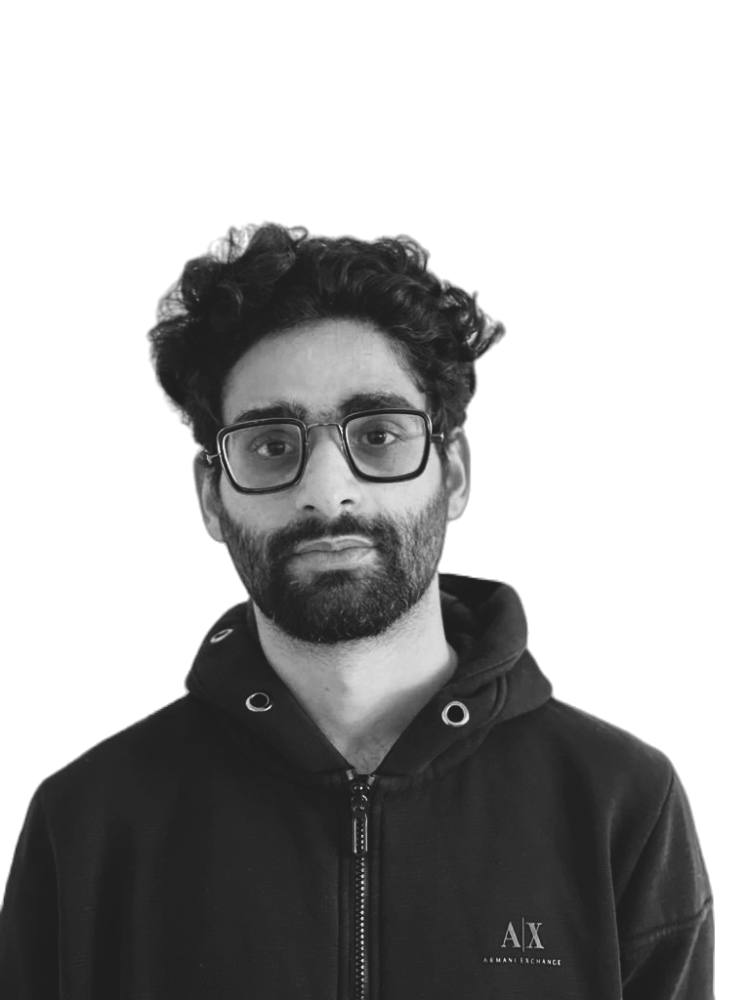

(computer science student)
Certainly! Here's a short note about you:
---
**About Me: Syed Farman Ali**
Hello! I'm Syed Farman Ali, a dedicated individual with a passion for software development. I hold a Bachelor's degree in Computer Applications (BCA) and a Master's degree in Computer Applications (MCA). During my academic journey, I've acquired a strong foundation in computer science and honed my skills in various programming languages and technologies.
I had the incredible opportunity to contribute to the field of software development through an internship at CID Srinagar, where I served as a Django Developer. This experience allowed me to apply my theoretical knowledge in a real-world setting and make meaningful contributions to projects. The internship at CID Srinagar enhanced my problem-solving abilities, teamwork skills, and provided me with valuable insights into the world of cybersecurity and information technology.
I am enthusiastic about continuous learning and growth in the dynamic field of technology. Looking forward to leveraging my skills and knowledge to contribute to innovative projects and make a positive impact on the world of software development.